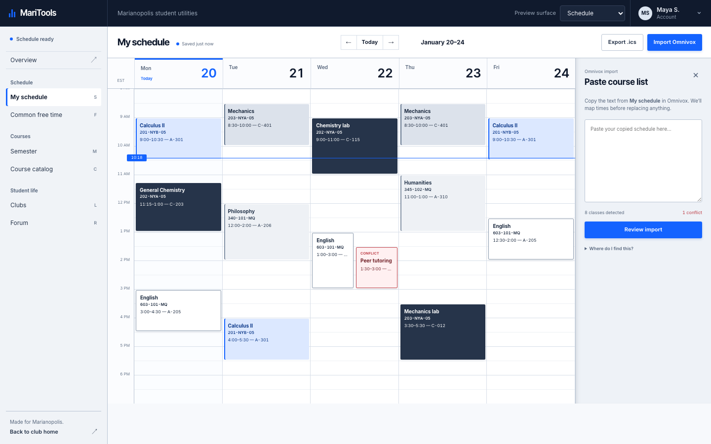
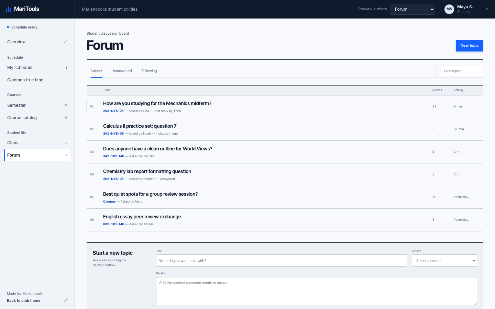
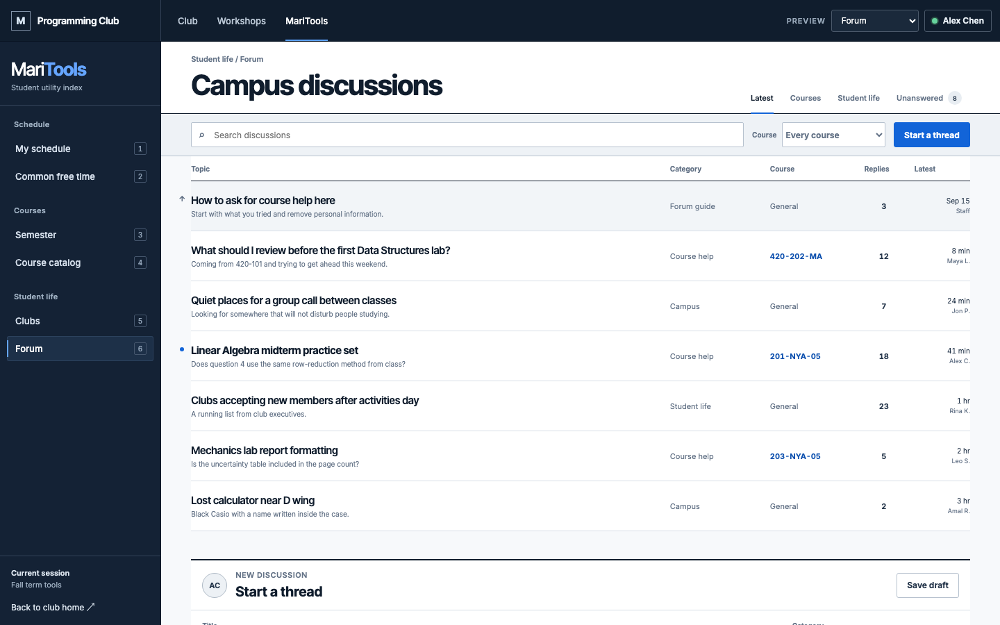
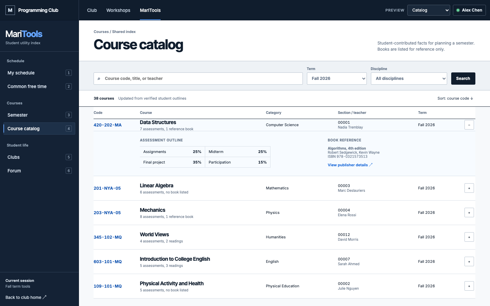
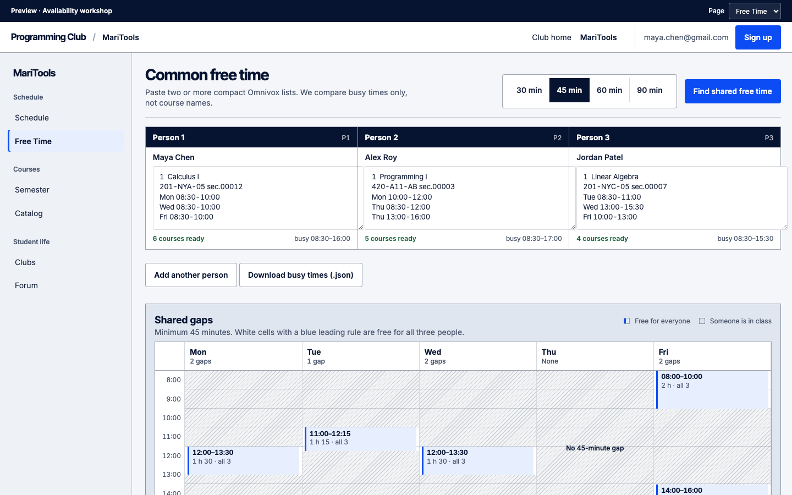
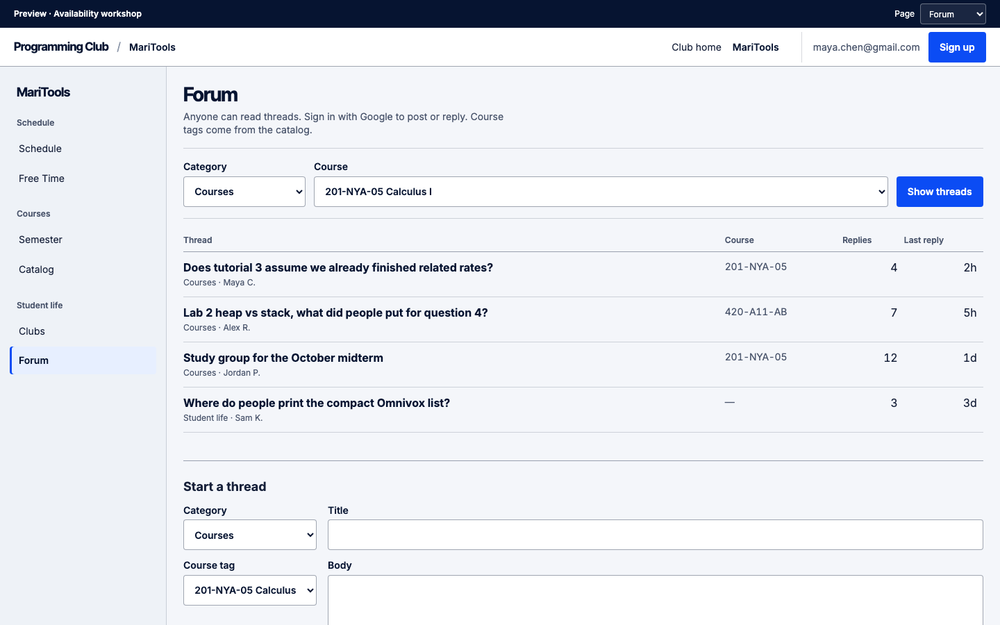
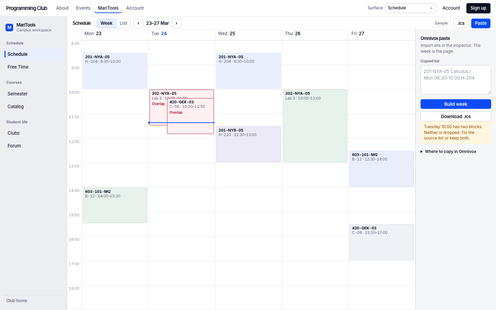
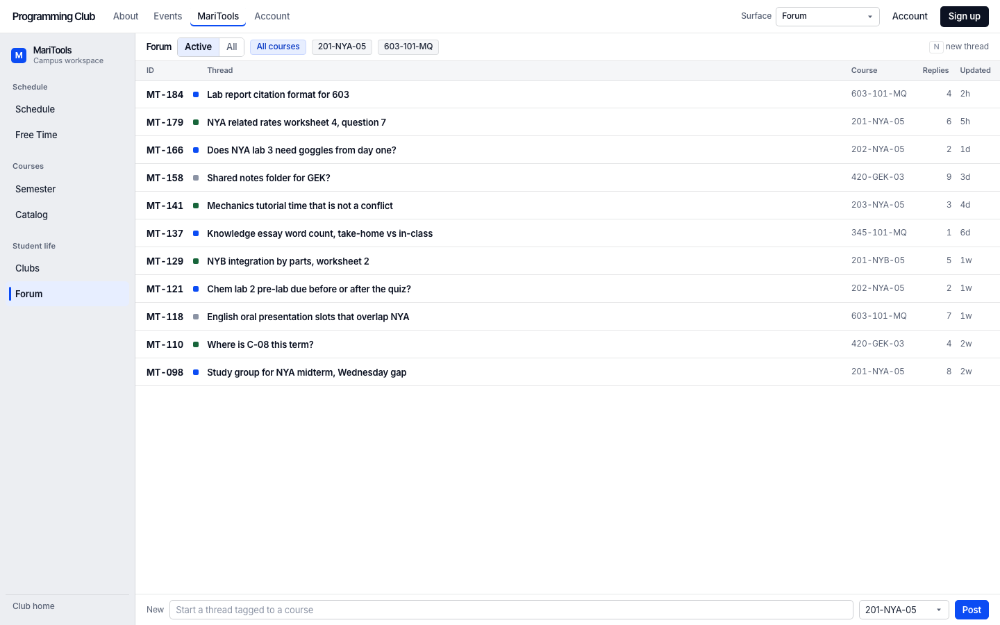

Candidate 1 · Codex · Calendar-first
The Registrar Desk
Google Calendar week owns the first viewport. Omnivox paste is a side drawer, not a giant form above a tiny grid.


From-scratch rebuild. Round 1 lookalikes archived. Four agents stole craft from Google Calendar, Reddit/Discourse, When2meet, and Linear — not the same mist-sidebar form.
Open each live preview and use the surface picker. Compare Schedule / Forum / Free time — thumbnails should not look interchangeable.
Candidate 1 · Codex · Calendar-first
Google Calendar week owns the first viewport. Omnivox paste is a side drawer, not a giant form above a tiny grid.


Candidate 2 · Codex · Discourse dens
Reddit/Discourse scan density: dark ink rail, ruled topic ledger, composer under the list.


Candidate 3 · Grok · Availability workshop
Free time is the flagship: person stations + shared-gap matrix. Schedule shares the calendar geometry.


Candidate 4 · Grok · Linear workspace
36px rail, week toolbar, Omnivox paste in a right inspector — not the main column.


Round 1 was archived under archive-round1-lookalike/. Round 2 banned “heading + lead + textarea + blue button” as the dominant Schedule composition and required a named signature layout inspired by real products. No monospace fonts.